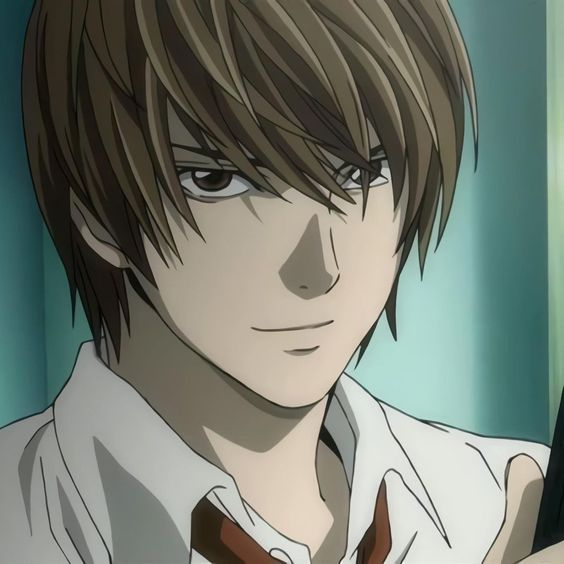
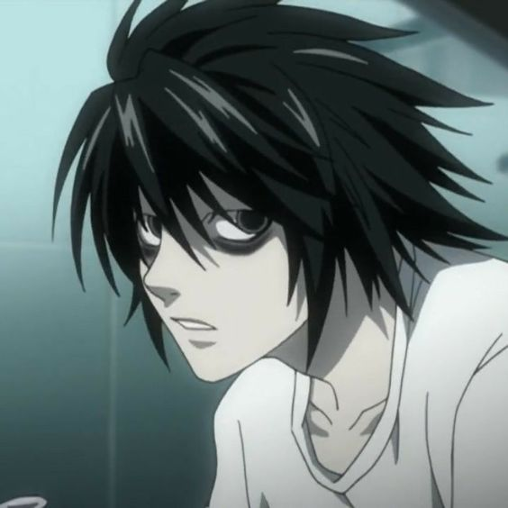
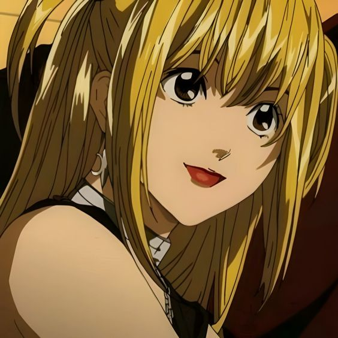
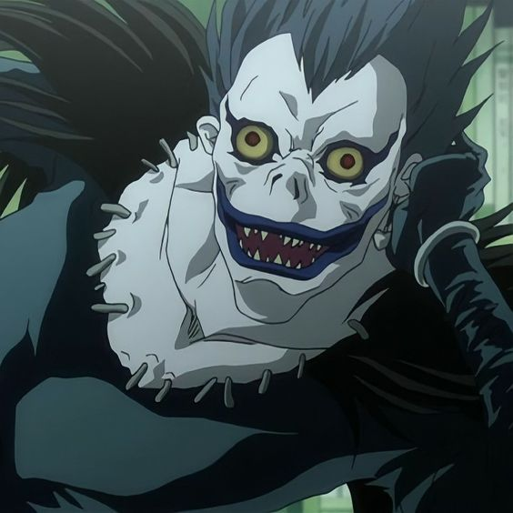
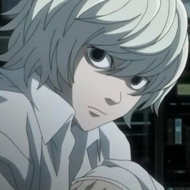
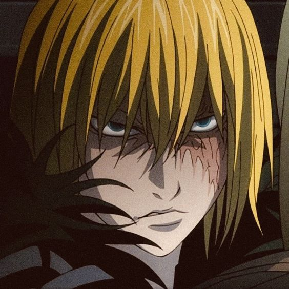
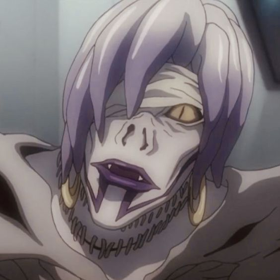
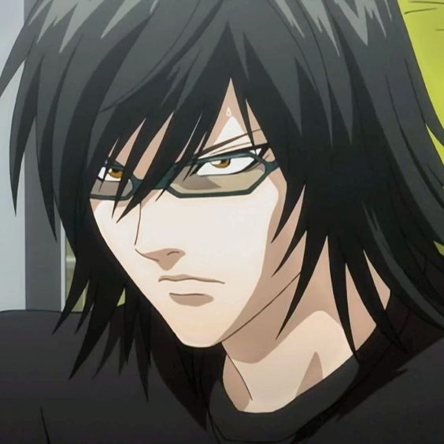

Main Characters
1 / 8

Light Yagami (夜神月, Yagami Raito) is the main protagonist of the Death Note series. After discovering the Death Note, he decides to use it to rid the world of criminals. His killings are eventually labelled by the people living in Japan as the work of "Kira."
2 / 8

L (エル, Eru) is a world-renowned detective who takes on the challenge of catching the mass murderer known as Kira. In his investigation, L becomes suspicious of Light Yagami and makes it his goal to prove that Light is Kira.
3 / 8

Misa Amane (弥 海砂, Amane Misa) is an up-and-coming model, actress, and supporter of Kira who eventually becomes the Second Kira. After gaining a Death Note, she seeks out Kira in order to thank him for killing the man who murdered her family and to offer him her help.
4 / 8

He is a Shinigami that drops a Death Note, a notebook that allows the user to kill anyone simply by knowing their name and face, into the human world to find relief from the boredom of his own realm.
5 / 8

Near (ニア, Nia) is the younger of L's two successors, raised in Wammy's House—Watari's orphanage for gifted children in Winchester, England. After L's death, Near begins his investigation of the Kira case, gathering evidence over a period of four years. Near takes his findings to the President of the United States and reveals himself to be the true successor of L.
6 / 8

Mello (メロ, Mero) is the older of L's two successors raised at Wammy's House, Watari's orphanage for gifted children in Winchester, England. When Roger asks that Mello and Near work together to capture Kira, Mello refuses, pointing out the differences between them. He leaves the orphanage soon after and eventually seeks help from the Mafia.
7 / 8

Rem (レム, Remu) is the Shinigami who gives Misa Amane one of the Death Notes she had. Like Ryuk, Rem possesses two Death Notes; however, Rem did not get hers through trickery.
8 / 8

Teru Mikami (魅上 照, Mikami Teru) is a criminal prosecutor chosen as the Hand of Kira by Light Yagami. Mikami takes ownership of Gelus's Death Note after Light falls under suspicion of being Kira again, and needs someone to act as Kira without being given every order.